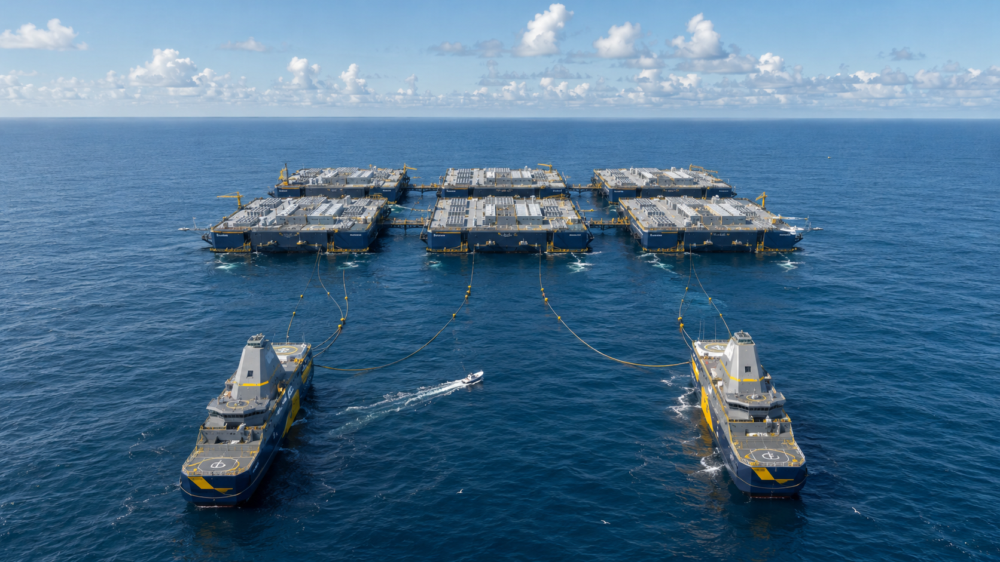

Atomarine designs and manufactures floating platforms that house high-performance computing, cooled by seawater and powered on the platform itself.
The growth of AI has run into a physical limit that has little to do with the chips. A new generation of processors can be installed in months, but connecting a large data center to the grid now takes four to seven years.
Building offshore removes that wait, and eases the land, cooling, and water constraints that slow projects ashore. Customers install and run their own servers. Atomarine provides the platform, the cooling, the connection to shore, and the power.
Demand for data center electricity is expected to roughly double by 2030, and the supply of firm power has become the binding constraint.
Atomarine manufactures floating platforms in shipyards as standardized units and moors them in coastal waters, where they can be assembled, serviced, and repositioned much like ships. Customers install and run their own servers, while Atomarine owns and operates the platform underneath them.
Generation is built into the campus, so capacity does not sit in an interconnection queue waiting for the grid.
Coastal waters avoid the competition for land and much of the local opposition that delays large projects ashore.
Platforms are produced as standardized units and improved over time, rather than engineered from scratch at every site.
A closed seawater loop replaces chillers and cooling towers and uses very little fresh water, for a modeled PUE around 1.15.
No part of the platform is experimental on its own. The work is in combining marine construction, seawater cooling, sealed computing, and on-platform power into one design that can be built again and again.
Floating units of roughly 75 to 100 megawatts, towable and replaceable one at a time, so a campus grows in steps instead of a single fixed build.
Dehumidified, oxygen-reduced halls protect equipment in the marine environment while staying accessible for servicing and hardware upgrades.
A closed loop of corrosion-resistant heat exchangers removes the need for chillers, cooling towers, and most fresh water.
Electricity is generated at the platform, starting with gas turbines and moving to compact reactors as that technology is licensed.
Generation vessels are shared across sites and can reach a campus within about a day to cover scheduled maintenance.
A short subsea fiber link provides low-latency connectivity for the workloads that need it, with satellite as a backup.
Atomarine generates power at the platform rather than drawing it from the grid. The first platforms run on gas turbines, which are proven, available today, and enough to put real customers on real hardware while the rest of the system is validated at sea.
As compact marine reactors are licensed, the same platforms move to nuclear generation, which supplies steady, carbon-free electricity without fuel deliveries at the site. The architecture is designed to take either source, so a platform can earn revenue on gas well before the nuclear path is ready.
We work with AI operators, shipbuilders, energy and nuclear partners, and investors. Tell us who you are and what you are looking for, and we will follow up.
info@atomarine.coPlease include your name, your organization, and your area of interest.